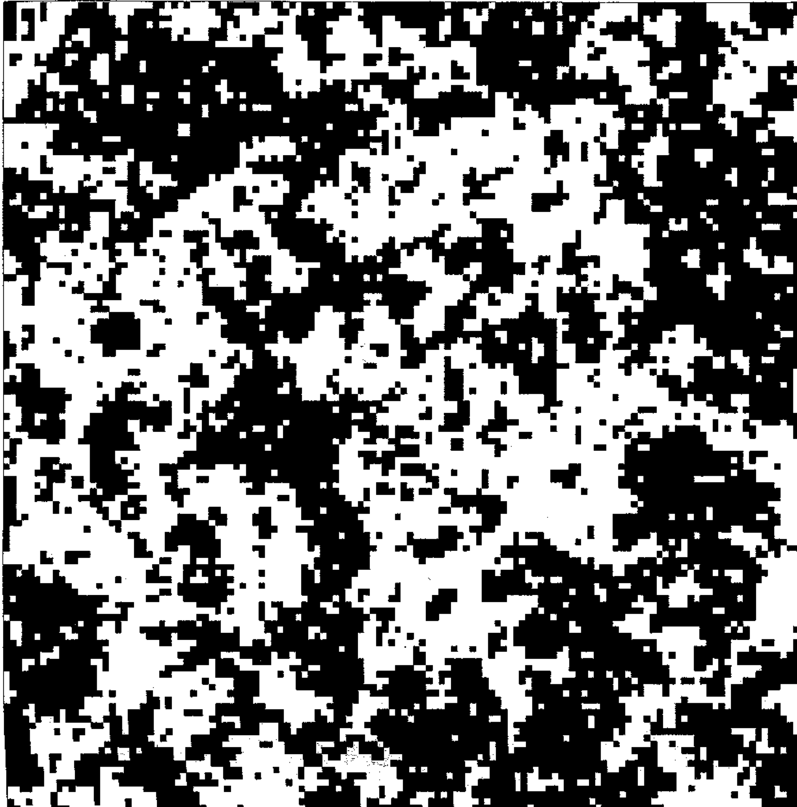
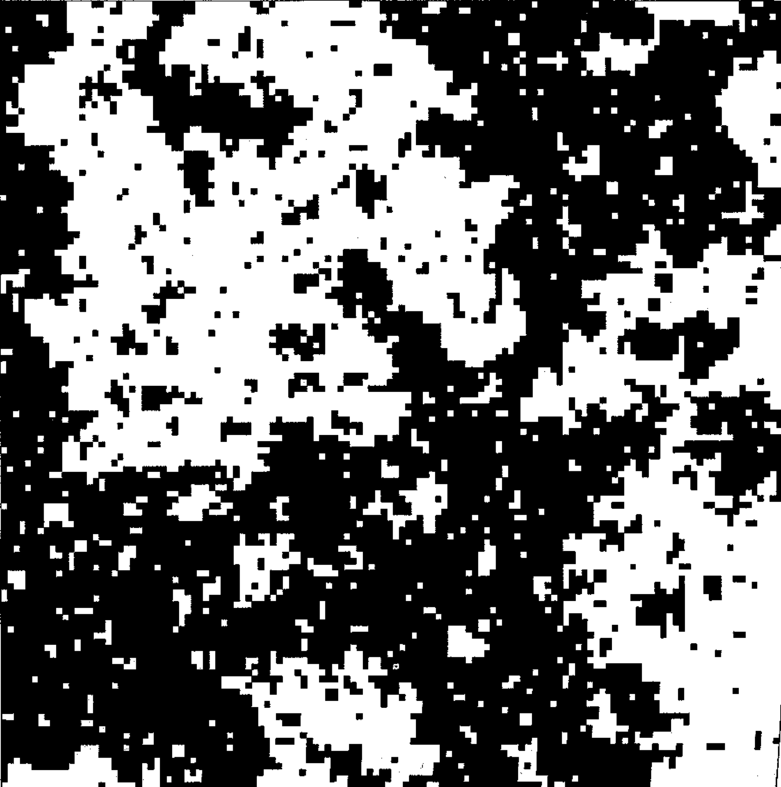
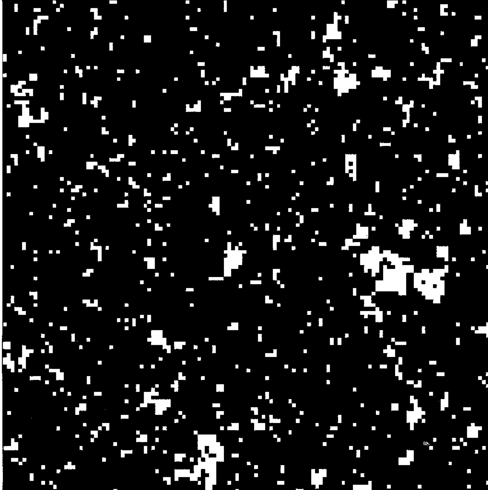

4 The Ising model: the prototype model for a phase transition
In order to probe the properties of the critical region, it is common to appeal to simplified model systems whose behaviour parallels that of real materials. The sophistication of any particular model depends on the properties of the system it is supposed to represent. The simplest model to exhibit critical phenomena is the two-dimensional Ising model of a ferromagnet. Actual physical realizations of 2-d magnetic systems do exist in the form of layered ferromagnets such as K\(_2\)CoF\(_4\), so the 2-d Ising model is of more than just technical relevance.
4.1 The 2D Ising model
The 2-d spin-\(\frac{1}{2}\) Ising model envisages a regular arrangement of magnetic moments or ‘spins’ on an infinite plane. Each spin can take two values, \(+1\) (‘up’ spins) or \(-1\) (‘down’ spins) and is assumed to interact with its nearest neighbours according to the Hamiltonian
\[ {\cal H}_I=-J\sum_{<ij>}s_is_j - H\sum_i s_i \tag{4.1}\]
where \(J>0\) measures the strength of the coupling between spins and the sum extends over nearest neighbour spins \(s_i\) and \(s_j\), i.e it is a sum of the bonds of the lattice. \(H\) is a magnetic field term which can be positive or negative (although for the time being we will set it equal to zero). The order parameter is simply the average magnetisation:
\[m=\frac{1}{N} \langle \sum_i s_i \rangle\:,\] where \(\langle\cdot\rangle\) means an average over configurations.
The fact that the Ising model displays a phase transition was argued in Chapter 2. Thus at low temperatures for which there is little thermal disorder, there is a preponderance of aligned spins and hence a net spontaneous magnetic moment (ie. the system is ferromagnetic). As the temperature is raised, thermal disorder increases until at a certain temperature \(T_c\), entropy drives the system through a continuous phase transition to a disordered spin arrangement with zero net magnetisation (ie. the system is paramagnetic). These trends are visible in configurational snapshots from computer simulations of the 2D Ising model (see Figure 5.4). Although each spin interacts only with its nearest neighbours, the phase transition occurs due to cooperative effects among a large number of spins. In the neighbourhood of the transition temperature these cooperative effects engender fluctuations that can extend over all length-scales from the lattice spacing up to the correlation length.



An interactive Monte Carlo simulation of the Ising model demonstrates the phenonomenology, By altering the temperature you will be able to observe for yourself how the spin arrangements change as one traverses the critical region. Pay particular attention to the configurations near the critical point. They have very interesting properties. We will return to them later!
Although the 2-d Ising model may appear at first sight to be an excessively simplistic portrayal of a real magnetic system, critical point universality implies that many physical observables such as critical exponents are not materially influenced by the actual nature of the microscopic interactions. The Ising model therefore provides a simple, yet quantitatively accurate representation of the critical properties of a whole range of real magnetic (and indeed fluid) systems. This universal feature of the model is largely responsible for its ubiquity in the field of critical phenomena. We shall explore these ideas in more detail later in the course.
4.2 Exact solutions: the one dimensional Ising chain
One might well ask why the 2D Ising model is the simplest model to exhibit a phase transition. What about the one-dimensional Ising model (ie. spins on a line)? In fact in one dimension, the Ising model can be solved exactly. It turns out that the system is paramagnetic for all \(T>0\), so there is no phase transition at any finite temperature. To see this, consider the ground state of the system in zero external field. This will have all spins aligned the same way (say up), and hence be ferromagnetic. Now consider a configuration with a various “domain walls” dividing spin up and spin down regions:
Instead of considering the underlying spin configurations, we shall describe the system in terms of the statistics of its domain walls. The energy cost of a wall is \(\Delta = 2J\), independent of position. Domain walls can occupy the bonds of the lattice, of which there are \(N-1\). Moreover, the walls are noninteracting, except that you cannot have two of them on the same bond. (Check through these ideas if you are unsure.)
In this representation, the partition function involves a count over all possible domain wall arrangements. Since the domain walls are non interacting (eg it doesn’t cost energy for one to move along the chain) we can calculate \(Z\) by considering the partition function associated with a single domain wall being present or absent on some given bond, and then simply raise to the power of the number of bonds:
\[Z=Z_1^{N-1}\]
where
\[Z_1=e^{\beta J} + e^{\beta (J-\Delta)}=e^{\beta J}(1+e^{-\beta\Delta})\] is the domain wall partition function for a single bond and represent the sum over the two possible states: domain wall absent or present. Then the free energy per bond of the system is
\[\beta f\equiv \beta F/(N-1)=-\ln Z_1=-\beta J-\ln(1+e^{-\beta\Delta})\]
The first term on the RHS is simply the energy per spin of the ferromagnetic (ordered) phase, while the second term arises from the free energy of domain walls. Clearly for any finite temperature (ie. for \(\beta<\infty\)), this second term is finite and negative. Hence the free energy will always be lowered by having a finite concentration of domain walls in the system. Since these domain walls disorder the system, leading to a zero average magnetisation, the 1D system is paramagnetic for all finite temperatures. Exercise: Explain why this argument works only in 1D.
4.2.1 More general 1D spins systems: transfer matrix method
Generally speaking one-dimensional systems lend themselves to a degree of analytic tractability not found in most higher dimensional models. Indeed for the case of a 1-d assembly of \(N\) spins each having \(m\) discrete energy states, and in the presence of a magnetic field, it is possible to reduce the evaluation of the partition function to the calculation of the eigenvalues of a matrix–the so called transfer matrix.
Let us start by assuming that the assembly has cyclic boundary conditions, then the total energy of configuration \(\{s\}\) is
\[\begin{aligned} H(\{s\})=&-\sum_{i=1}^N (Js_is_{i+1}+Hs_i)\\ \:=&-\sum_{i=1}^N (Js_is_{i+1}+H(s_i+s_{i+1})/2)\\ \:=&\sum_{i=1}^N E(s_i,s_{i+1}) \end{aligned}\]where we have defined \(E(s_i,s_{i+1})=-Js_is_{i+1}-H(s_i+s_{i+1})/2\).
Now the partition function may be written
\[\begin{aligned} Z_N =& \sum_{\{s\}}\exp\left(-\beta H(\{s\})\right)\nonumber \\ =&\sum_{\{s\}}\exp\left(-\beta[E(s_1,s_2)+E(s_2,s_3)+....E(s_N,s_1)]\right) \nonumber\\ =&\sum_{\{s\}}\exp\left(-\beta E(s_1,s_2)\right)\exp\left(-\beta E(s_2,s_3)\right)....\exp\left(-\beta E(s_N,s_1)\right) \nonumber\\ =&\sum_{i,j,...,l=1}^m V_{ij}V_{jk}...V_{li} \end{aligned} \tag{4.2}\]
where the \(V_{ij}=\exp(-\beta E_{ij})\) are elements of an \(m \times m\) matrix \({\bf V}\), known as the transfer matrix (\(i,j,k\) etc are dummy indices that run over the matrix elements). You should see that the sum over the product of matrix elements picks up all the terms in the partition function and therefore Equation 4.2 is an alternative way of writing the partition function.
The reason it is useful to transform to a matrix representation is that it transpires that the sum over the product of matrix elements in equation ([eq-Vs]) is simply just the trace of \({\bf V}^N\) (check this yourself for a short periodic chain), given by the sum of its eigenvalues:-
\[Z_N=\lambda_1^N+\lambda_2^N+...\lambda_m^N\] For very large \(N\), this expression simplifies further because the largest eigenvalue \(\lambda_1\) dominates the behaviour since \((\lambda_2/\lambda_1)^N\) vanishes as \(N\rightarrow \infty\). Consequently in the thermodynamic limit one may put \(Z_N=\lambda_1^N\) and the problem reduces to identifying the largest eigenvalue of the transfer matrix.
Specializing to the case of the simple Ising model in the presence of an applied field \(H\), the transfer matrix takes the form
\[{\bf V}(H)=\left( \begin{array}{cc} e^{\beta(J+H)} & e^{-\beta J} \\ e^{-\beta J} & e^{\beta(J-H)} \end{array} \right)\]
This matrix has two eigenvalues which can be readily calculated in the usual fashion as the roots of the characteristic polynomial \(|{\bf V}-\lambda{\bf I}|\). They are
\[\lambda_{\pm}=e^{\beta J}\cosh(\beta H) \pm \sqrt{e^{2\beta J}\sinh^2\beta H+e^{-2\beta J}}.\]
Hence the free energy per spin \(f=-k_BT\ln \lambda_+\) is
\[f=-k_BT\ln \left[e^{\beta J}\cosh(\beta H) + \sqrt{e^{2\beta J}\sinh^2\beta H+e^{-2\beta J}}\right].\]
The Ising model in 2D can also be solved exactly, as was done by Lars Onsager in 1940. The solution is extremely complicated and is regarded as one of the pinnacles of statistical mechanics. In 3D no exact solution is known.